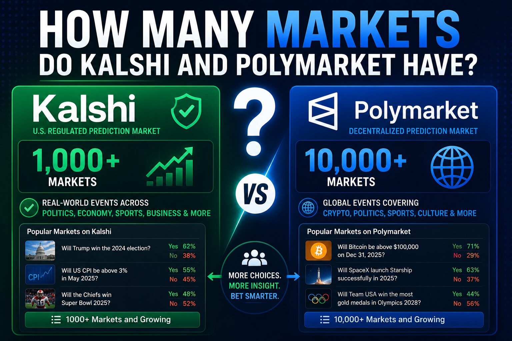

How Many Markets Do Kalshi and Polymarket Have?

The short answer
As of early July 2026, Polymarket lists roughly 2,400+ active markets at any given time, while Kalshi's total runs into the thousands of active contracts once every category is counted, with sports alone accounting for close to 2,000 of them. Neither number sits still for long — both platforms add and close markets constantly, and big events like the 2026 World Cup can add hundreds of match-specific and prop contracts in a single week and then remove them just as fast once the tournament ends. Treat any specific count as a snapshot, not a fixed figure.
Why you'll see wildly different numbers depending on the source
Market counts reported by different trackers rarely agree, for a few structural reasons. First, timing: a count taken during the World Cup or an election week looks nothing like a count taken in a quiet month. Second, definitions: some sources count a whole event (like "2026 World Cup Winner") as one market, while others count every individual outcome within it separately, which can turn one event into dozens of line items. Third, category scope: a figure like "Polymarket has 4,000+ sports markets" and a figure like "Polymarket has 2,400 active markets total" aren't actually contradictory if they were measured months apart, during and outside a major sporting event.
Kalshi's market count
Kalshi operates as a CFTC-regulated exchange, which means every new contract type technically needs regulatory clearance before it can list — a structurally slower, more gated process than Polymarket's. Even so, Kalshi's catalog has grown substantially: sports contracts alone totaled 1,949 markets by mid-June 2026, and that's before counting Kalshi's economics, politics, weather, crypto, and culture categories, which together push the platform's live total into the low thousands on an active week. Sports has become Kalshi's dominant category by volume, regularly running above 85% of total monthly trading, even though it's a relatively recent addition — Kalshi didn't list sports contracts until December 2024.
Polymarket's market count
Polymarket's more open listing process lets it stand up markets faster and in higher volume, and its numbers swing more dramatically around major events. One July 2026 snapshot put total active markets at roughly 2,400+, spanning politics, macro data, crypto, sports, and breaking news. Category-level counts from earlier in 2026 illustrate how concentrated activity gets around big moments: over 4,000 active sports markets in early April 2026, more than 1,500 political markets the same month, and over 360 culture markets — figures that reflect a different point in the calendar and a different counting method than the July total-market snapshot. During the 2026 World Cup specifically, Polymarket ran 223 active tournament markets on its own, on top of everything else on the platform.
Side by side
On a quiet week, Kalshi and Polymarket land in a broadly similar range once every category is counted — both in the low thousands of live contracts. The gap widens sharply around major events: Polymarket's more permissive listing process lets it spin up hundreds of granular prop and outcome markets for something like a World Cup knockout round faster than Kalshi's approval-gated process typically can, though Kalshi has closed much of that gap by building out very deep match-by-match and player-prop coverage of its own, especially in sports.
Why the gap exists structurally
The underlying reason isn't really about ambition — it's regulatory architecture. Kalshi is a single, US-domiciled, CFTC-licensed designated contract market, and each new category or contract structure it wants to offer has historically needed individual regulatory sign-off, which naturally caps how fast its catalog can grow. Polymarket's global platform lists new markets far more freely, which is part of why it can react to breaking news with a new market within hours. Polymarket US, the newer CFTC-regulated American product, currently sits closer to Kalshi's model — narrower and rolling out category by category, starting with sports.
The takeaway
If you're comparing the two platforms for breadth, don't anchor on a single headline number from either side — check the live browse page on each platform for the category you actually care about, since a stale comparison from a few months back can be off by a factor of two once a major sporting or political event has come and gone.
Disclaimer: This post is for informational purposes only and is not financial or investment advice. Market counts on both platforms change daily and figures cited here are snapshots from the dates noted. Always check kalshi.com/browse and polymarket.com for current, live market counts.